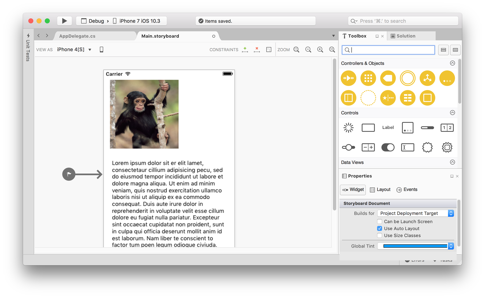

Duration
20 minutes
Lab Goals
The primary goal of this lab will be to use Auto Layout to arrange several common controls so they automatically size and position themselves relative to one another.
- We will first use the Xamarin.iOS Designer to add a
UIImageView, and aUITextBlockto a view controller. - Then, we will use constraints to size and position the controls.
Steps
Create a Single View application
The first step is to create a new iOS project:
- Create a new Single View Application.
- Name the project "MonkeyInfo" and place it into a known location.
- Add the monkey.jpg image to the project's Resources folder. You can find the image in the Exercise 1 assets folder.
Add Controls to our UI
- Add a
UIImageViewto the default View Controller in the storyboard and position it in the upper left corner. Give it a reasonable size and make it approximately square. - Give the image view a name of imgMonkey. This will allow us to access the image programmatically in code in a later exercise.
- Set the contents of the image view to monkey.jpg.
- Drag a Text View onto the View Controller below the monkey image. Resize the control so it takes up the entire width of the screen and the remaining height of the screen (with appropriate margins).
- Try running the application on an iPhone simulator and rotate the simulator to landscape. 
Add Constraints
- Select the image and press the "Constraint Editing Mode" button in the upper right of the design surface.
- Constrain the left and top edges of the image to the parent view controller.
- Constrain the width and height of the image to fixed values by double-clicking the width and height dragging controls respectively.
- Select the text view and press the "Constraint Editing Mode" button in the upper right of the design surface.
- Constrain the left, right and bottom sides of the Text View to the edges of the parent view controller.
- Finally, constrain the top of the text view to the bottom of the monkey image view.
If everything worked correctly, the ImageView and TextView should appear to be blue (not orange).
Clean up the Appearance
If you run the Monkey Info app now you'll see that the controls correctly resize when we change orientations. However, there are a couple of issues; the aspect ratio on the monkey image is a bit off and the text cuts off when we switch to landscape.
- Single-click on the Text View to select it.
- Select Widget on the Properties Tab. Scroll down to the Scroll View section and uncheck "Scrolling Enabled". Alternatively, you can adjust the sizing or properties on the Text View and Image View to make the text fit in landscape.
- Single-click the Image View to select it.
- In the View section of the properties, change the Content Mode> to Aspect Fill. You'll notice the image aspect ratio has been corrected but it will over-draw.
- To correctly clip the image, tick the Clip To Bounds property in the Drawing section.
Bonus Exercise
Add a UILabel with the text "Tree Monkey" to the right of the monkey image.
Use constraints so it maintains it's position when the UI is rotated.
Summary
In this exercise, we created constraints using the Xamarin.iOS Designer to create a responsive UI.